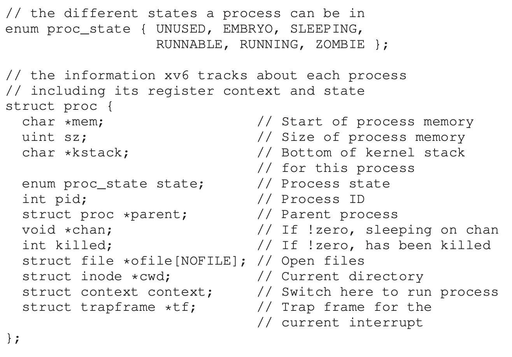
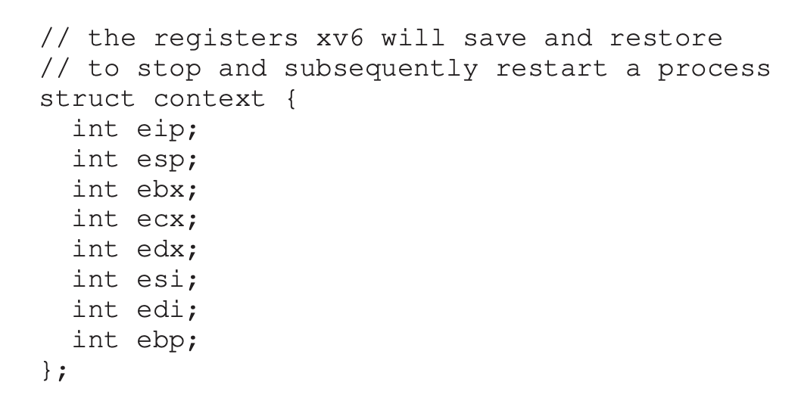
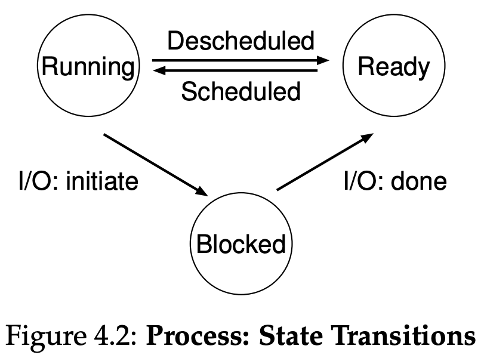
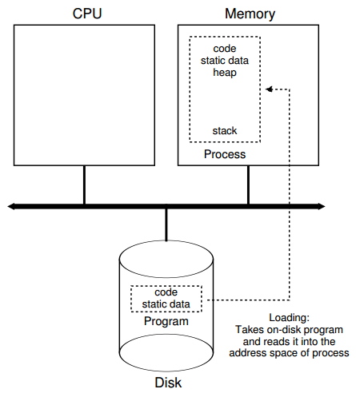

Chapter 4
This slide deck is still under active development. Expect changes before it is finalized.
After this lecture, you should be able to:
task_struct.Wraps around a program
task_struct.task_struct is allocated.Context Switching saves all of this to memory


Four main states we care about

Note: “Job” == “Process”

Mechanism vs Policy is a recurring theme in OS design.
$ ps
PID TTY TIME CMD
5568 pts/0 00:00:00 bash
5593 pts/0 00:00:00 ps
$ ps -ef
...
ziel5122 4872 4868 0 15:16 ? 00:00:00 sshd: ziel5122@notty
ziel5122 4873 4872 0 15:16 ? 00:00:00 sshd: ziel5122@internal...
root 5562 4257 0 15:31 ? 00:00:00 sshd: brun1992 [priv]
root 5564 2 0 15:31 ? 00:00:00 [flush-253:0]
brun1992 5567 5562 0 15:31 ? 00:00:00 sshd: brun1992@pts/0
brun1992 5568 5567 0 15:31 pts/0 00:00:00 -bash
apache 5666 10367 0 Sep06 ? 00:00:01 /usr/sbin/httpd
apache 5667 10367 0 Sep06 ? 00:00:01 /usr/sbin/httpd
apache 5668 10367 0 Sep06 ? 00:00:01 /usr/sbin/httpd
...ps shows processes of current user in current terminal-e (all processes) and -f (full output) options:$ ps -ef
UID PID PPID C STIME TTY TIME CMD
...
ziel5122 4872 4868 0 15:16 ? 00:00:00 sshd: ziel5122@notty
ziel5122 4873 4872 0 15:16 ? 00:00:00 sshd: ziel5122@internal...
root 5562 4257 0 15:31 ? 00:00:00 sshd: brun1992 [priv]
root 5564 2 0 15:31 ? 00:00:00 [flush-253:0]
brun1992 5567 5562 0 15:31 ? 00:00:00 sshd: brun1992@pts/0
brun1992 5568 5567 0 15:31 pts/0 00:00:00 -bash
apache 5666 10367 0 Sep06 ? 00:00:01 /usr/sbin/httpd
apache 5667 10367 0 Sep06 ? 00:00:01 /usr/sbin/httpd
apache 5668 10367 0 Sep06 ? 00:00:01 /usr/sbin/httpd
...$ top
top - 15:48:16 up 24 days, 9:11, 2 users, load average: 0.00, 0.00, 0.00
Tasks: 196 total, 1 running, 195 sleeping, 0 stopped, 0 zombie
Cpu(s): 0.7%us, 0.7%sy, 0.0%ni, 98.3%id, 0.3%wa, 0.0%hi, 0.0%si, 0.0%st
Mem: 4019552k total, 2737172k used, 1282380k free, 440900k buffers
Swap: 4161532k total, 44k used, 4161488k free, 1845072k cached
PID USER PR NI VIRT RES SHR S %CPU %MEM TIME+ COMMAND
2084 root 20 0 121m 9292 4668 S 0.3 0.2 2:23.50 nsrexecd
6520 brun1992 20 0 2704 1180 872 R 0.3 0.0 0:00.19 top
11268 root 20 0 26664 4128 3348 S 0.3 0.1 55:01.68 vmtoolsd
1 root 20 0 2900 1380 1208 S 0.0 0.0 1:06.58 init
2 root 20 0 0 0 0 S 0.0 0.0 0:04.22 kthreadd
3 root RT 0 0 0 0 S 0.0 0.0 0:00.00 migration/0
4 root 20 0 0 0 0 S 0.0 0.0 0:21.83 ksoftirqd/0
5 root RT 0 0 0 0 S 0.0 0.0 0:00.00 stopper/0
6 root RT 0 0 0 0 S 0.0 0.0 0:21.44 watchdog/0